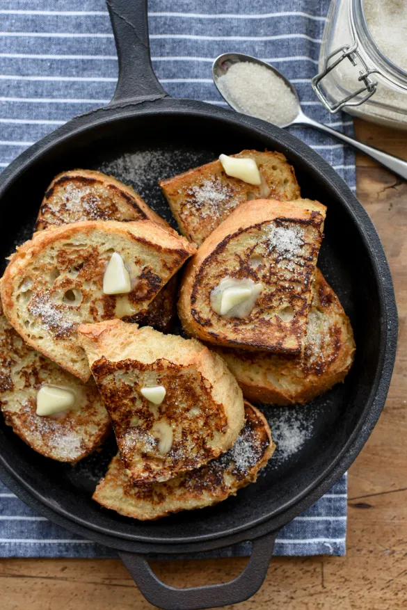

Classic French Toast

Description
An easy and satisfying breakfast treat with a hint of cinnamon.
Ingredients
- 4 slices of bread
- 2 large eggs
- 1/2 cup of milk
- 1/2 teaspoon vanilla extract
- 1/4 teaspoon ground cinnamon
- Pinch of salt
- Butter or oil for frying
- Maple syrup, powdered sugar, or fresh fruit for serving
Steps
- In a shallow bowl, whisk together eggs, milk, vanilla, cinnamon, and salt.
- Heat a large skillet over medium heat and add a small amount of butter or oil.
- Dip each bread slice into the egg mixture, coating both sides.
- Cook the bread slices in the skillet until golden brown, about 2-3 minutes per side.
- Serve warm with maple syrup, powdered sugar, or fresh fruit on top.